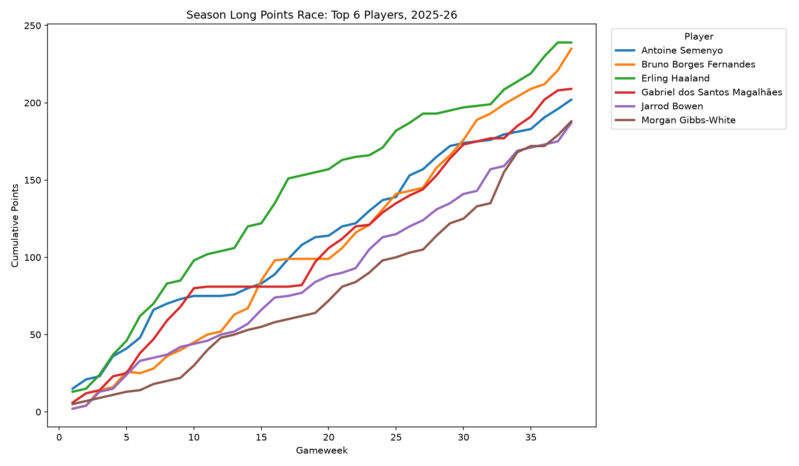

Top 15 Scorers
Haaland edged out Fernandes for the crown, with both crossing 200 points, a rare feat in recent FPL history.

A full gameweek by gameweek breakdown of the Premier League Fantasy season
Haaland edged out Fernandes for the crown, with both crossing 200 points, a rare feat in recent FPL history.
Points earned per million spent, filtered to players with meaningful minutes. Cheap, defensive contribution heavy players dominate this list.

2025-26 introduced Defensive Contribution as a new scoring mechanic. Here are the players who racked up the most raw defensive actions.

Cumulative points across all 38 gameweeks for the season's top 6 scorers.

Average points per gameweek against variance, revealing steady performers versus boom-or-bust differentials.